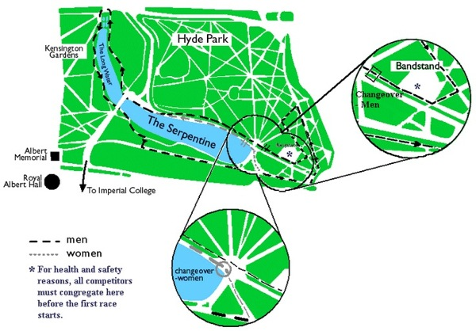

What and where is this awesome race?
The Hyde Park Relays is a student relay race through Hyde Park and Kensington Gardens, winding around the Serpentine lake and down to Hyde Park Corner (for the men). The race brings together running clubs, societies and student from the UK and across Europe
Mens teams run a total of 6 laps, with each runner completing a lap of not less than 5.164 km. (approx 3.2 miles)
Womens teams run a total of 4 laps, with each runner completing a lap of not less than 3.464 km. (approx 2.2 miles).

How to enter
External entries are now open. Please download the entry form, fill it in and email it back to hpr[at]imperial.ac.uk. After this, pay the appropriate entry fee here.
Internal entries should open in January. Check back soon!
On the day
10:30 - 13:00
Team registration in Metric in the Union. Find the form in Metric and fill it in with the names of your runners (1 form per team). You'll then receive your numbers, and have the chance to buy a race T-shirt.
14:00
Start of mens/mixed race.
14:05
Start of women's race.
17:00
Food and drink served in the SCR on the main walkway.
17:30
Presentations and prizes, after which you can clean up and make yourself look pretty! Showers in Ethos, Imperial College Sports Centre.
19:00 - 02:00
Hyde Park Relays after party in Metric.
Results
Results will appear here as soon as possible after the race.
For now, you can check out the results from last year:
Mens,
Womens.
Records
-
Mens All Time
| Name |
Institute |
Year |
Time |
| H Jones |
Liverpool University |
1980 |
13:12 |
| S Mugglestone |
Oxford University |
1990 |
13:14 |
| J Davies |
Brunel University |
1979 |
13:17 |
| S Mugglestone |
Oxford University |
1991 |
13:17 |
| D Clarke |
Brunel University |
1979 |
13:19 |
| J Brown |
Brunel University |
1974 |
13:21 |
| R Smedley |
Birmingham University |
1975 |
13:21 |
| D Moorcroft |
Loughborough University |
1976 |
13:21 |
| S Mugglestone |
Oxford University |
1989 |
13:21 |
| E Conway |
St Mary's College |
1990 |
13:21 |
-
Womens All Time
| Name |
Institute |
Year |
Time |
| S Vinall |
Loughborough University |
1981 |
10:47 |
| W Wright |
Loughborough University |
1991 |
10:51 |
| A Wyeth |
West London Institue of H.E. |
1986 |
11:00 |
| W Wright |
Loughborough University |
1992 |
11:03 |
| L Webb |
University of London |
1988 |
11:08 |
| A Davies |
Loughborough University |
1993 |
11:12 |
| A Hallington |
Bedford College |
1985 |
11:13 |
| C Fothergill |
Cambridge University |
1993 |
11:14 |
| C Mijovich |
Birmingham University |
1986 |
11:19 |
| B Nicholson |
Loughborough University |
1986 |
11:19 |
| S Ramsdale |
Loughborough University |
1986 |
11:19 |